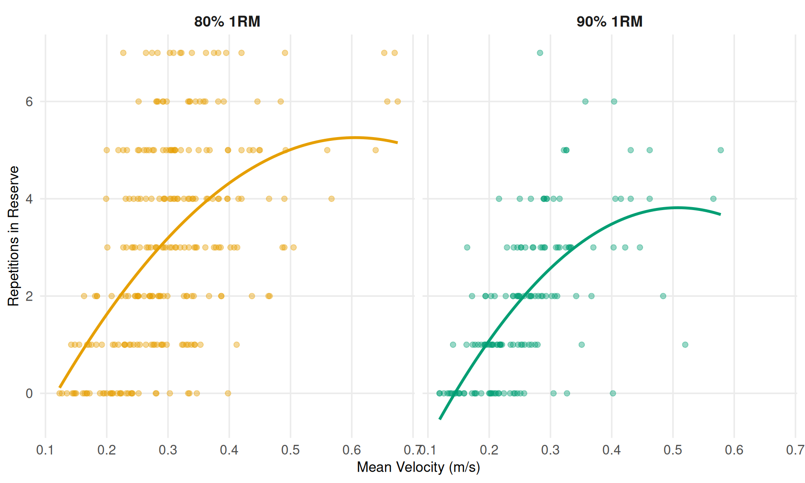
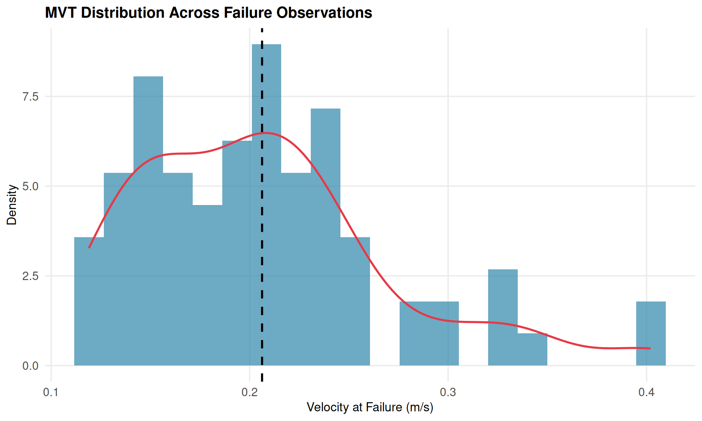

Velocity-Based Training for the Conventional Deadlift
An Investigation of the RIR-Velocity Relationship
Authors
Affiliations
João Costa
Sport Science Research
Filipe Braga
MSc Thesis Research
Published
December 27, 2025
Executive Summary
This research investigates whether velocity-based training (VBT) principles, well-established for exercises like the squat and bench press, can be successfully applied to the conventional deadlift—an exercise with unique biomechanical characteristics.
Key Findings
Question
Finding
Practical Implication
Does VBT work for deadlifts?
Yes, but with more variability
Use VBT as one tool, not the only tool
Individual vs general models?
Individual ~2x more accurate
Calibrate individually for serious athletes
Does load matter?
No significant effect
One velocity table works across loads
MVT variability?
CV = 30.8%
Individual calibration essential
Day-to-day reliability?
Moderate (ICC ~0.5-0.7)
Recalibrate every 2-4 weeks
First-rep prediction?
MAE = 1.29 reps
Useful for real-time autoregulation
1. Introduction
1.1 Background
Velocity-Based Training (VBT) has emerged as an objective method for monitoring and prescribing resistance training intensity. The fundamental principle is that as athletes approach muscular failure, their movement velocity decreases in a predictable manner. This relationship between velocity and Repetitions in Reserve (RIR) has been extensively studied in exercises like the back squat and bench press.
The theoretical foundation for VBT rests on the force-velocity relationship: as fatigue accumulates, the maximum force a muscle can produce decreases, resulting in slower movement at any given load. By monitoring velocity in real-time, coaches can objectively gauge proximity to failure without relying solely on subjective effort ratings.
1.2 The Deadlift Challenge
The conventional deadlift presents unique biomechanical characteristics that may affect the velocity-RIR relationship:
Concentric-only initiation: Unlike the squat, the deadlift begins from a dead stop without an eccentric-concentric stretch-shortening cycle, eliminating the elastic energy contribution
Grip as a limiting factor: The grip can become a limiting factor independent of the target musculature (posterior chain), potentially causing failure before true muscular exhaustion
Binary failure pattern: Deadlifts tend to fail more abruptly—either the bar leaves the floor or it doesn’t—compared to the gradual “grinding” often seen in squats
Longer lever arms: The horizontal distance between the load and hip joint creates substantial moment arms that change throughout the lift
1.3 Research Questions
This thesis research addresses six key questions:
Does a meaningful velocity-RIR relationship exist for deadlifts?
Do individual models outperform general equations?
Does load percentage affect the velocity-RIR relationship?
How variable is the minimum velocity threshold (MVT) across individuals?
How reliable are individual velocity profiles across testing days?
Participants performed the conventional deadlift under standardized conditions:
Exercise: Conventional deadlift with standard Olympic barbell
Loads: 80% and 90% of 1RM (determined via prior 1RM testing)
Testing Days: 2 separate days (minimum 48-72 hours apart) for cross-validation
Sets per condition: Each load tested on each day (4 total conditions per participant)
Rest periods: 3-5 minutes between sets
Failure criterion: Inability to complete a full repetition or voluntary termination
2.3 Velocity Measurement
Mean concentric velocity (MCV) was measured using a linear position transducer attached to the barbell. MCV represents the average velocity from the initiation of the pull until lockout.
2.4 RIR Assignment
RIR was assigned prospectively based on set completion:
Final repetition completed = RIR 0 (failure)
Penultimate repetition = RIR 1
And so forth…
This differs from subjective RIR estimates, providing an objective measure of proximity to failure.
2.5 Statistical Analysis
The analysis employed multiple complementary approaches:
Individual vs General Models:
General models: Population-level polynomial regression (velocity ~ RIR + RIR²)
Cross-validation: Day 1 models tested on Day 2 data
Linear Mixed Effects Models (LMM):
LMMs account for the nested data structure (repetitions within participants) by including:
Fixed effects: Population-average relationships
Random effects: Individual deviations (random intercepts and slopes)
Advanced Analyses:
MVT variability assessment (CV, IQR)
Day-to-day reliability (ICC)
Polynomial vs linear model comparison (AIC, BIC)
Velocity decay analysis
Failure prediction from early rep velocities (LOOCV)
3. Results
3.1 The Velocity-RIR Relationship
Show code
ggplot(data, aes(x = mean_velocity, y = rir, color = load_percentage)) +geom_point(alpha =0.4, size =2) +geom_smooth(method ="lm", formula = y ~poly(x, 2), se =FALSE, linewidth =1.2) +facet_wrap(~load_percentage, labeller =labeller(load_percentage =c(`80%`="80% 1RM",`90%`="90% 1RM" ))) +scale_color_load() +labs(x ="Mean Velocity (m/s)",y ="Repetitions in Reserve" ) +theme(legend.position ="none")

Figure 1: Velocity-RIR relationship for conventional deadlift
A clear negative relationship exists: higher RIR (more reps remaining) is associated with faster velocities. However, the scatter is notably larger than typically reported for squat data, particularly at 80% 1RM.
Key Finding: Individual models explain 2x more variance than general models, consistent with squat research. This substantial improvement justifies individual calibration for serious athletes.
Table 3: Deadlift vs Squat RIR-Velocity Relationship
Participants
46
19
Load Types
70%, 80%, 90%
80%, 90%
General R²
0.5
0.36
Individual R²
0.88
0.71
Improvement Factor
1.78x
1.95x
The deadlift shows lower R² values than the squat, likely due to:
Binary failure pattern: Less intermediate velocity signal
Grip fatigue: Introduces noise uncorrelated with true RIR
Absence of stretch-shortening cycle: Increased rep-to-rep variability
Technical breakdown: May affect velocity differently than pure muscular fatigue
3.4 Load Effects
Show code
if (!is.null(lmm_results)) {if (lmm_results$load_importance_result$recommendation =="global") {cat("**Finding**: Load percentage does NOT significantly affect the velocity-RIR relationship.\n\n")cat("This means coaches can use a **single velocity table** regardless of whether lifting at 80% or 90% 1RM, simplifying training prescription.\n") } else {cat("**Finding**: Load percentage significantly affects the velocity-RIR relationship.\n\n")cat("**Load-specific tables** are recommended for optimal precision.\n") }}
Finding: Load percentage does NOT significantly affect the velocity-RIR relationship.
This means coaches can use a single velocity table regardless of whether lifting at 80% or 90% 1RM, simplifying training prescription.
The MVT represents the velocity at which an athlete can no longer complete a repetition. If consistent across individuals, it could serve as a universal failure indicator.
if (!is.null(advanced_results)) { failure_data <- data[data$rir ==0, ] mvt <- advanced_results$mvtggplot(failure_data, aes(x = mean_velocity)) +geom_histogram(aes(y =after_stat(density)), bins =20, fill = COLORS$primary, alpha =0.7) +geom_density(color = COLORS$secondary, linewidth =1) +geom_vline(xintercept = mvt$population_stats$mean, linetype ="dashed", linewidth =1) +labs(x ="Velocity at Failure (m/s)", y ="Density",title ="MVT Distribution Across Failure Observations")}

Figure 3: Distribution of Minimum Velocity Threshold at failure
Interpretation: The high CV (30.8%) indicates substantial inter-individual variability. A single MVT value cannot be applied universally—individual calibration is essential.
4.2 Day-to-Day Reliability
The practical utility of VBT depends on the reliability of individual velocity profiles across testing days.
Interpretation: While quadratic models show marginal improvements for some individuals, the linear model is adequate for practical use—the added complexity of polynomial models is not justified by the small accuracy gains.
4.4 Velocity Decay Patterns
How does velocity loss per rep change as a set progresses?
Show code
if (!is.null(advanced_results) &&!is.null(advanced_results$velocity_decay)) { decay <- advanced_results$velocity_decaycat("**Velocity Decay Results:**\n\n")if (!is.null(decay$phase_decay)) {cat("- First half decay:", round(as.numeric(decay$phase_decay$first_half_decay), 4), "m/s per rep\n")cat("- Second half decay:", round(as.numeric(decay$phase_decay$second_half_decay), 4), "m/s per rep\n") }if (!is.null(decay$decay_acceleration)) {if (isTRUE(decay$decay_acceleration$accelerating)) {cat("- **Decay accelerates** near failure (p =", format(decay$decay_acceleration$p_value, digits =3), ")\n") } else {cat("- Decay is approximately constant throughout the set\n") } }} else {cat("*Velocity decay analysis will be available after running the advanced analysis pipeline.*\n")}
Velocity Decay Results:
Decay accelerates near failure (p = 0.035 )
Practical Implication: Velocity loss accelerates in the final reps, supporting the use of velocity thresholds to stop sets before technique breakdown.
4.5 First-Rep Failure Prediction
Can the first 1-3 rep velocities predict when failure will occur?
Equipment specificity - different devices may yield different values
5.4 Future Directions
Larger sample sizes with more diverse populations
Broader load ranges (60-95% 1RM)
Sumo and trap bar deadlift variants
Longer-term reliability studies
Integration with RPE for combined autoregulation strategies
6. Conclusion
This thesis research demonstrates that velocity-based training principles can be applied to the conventional deadlift, though with important caveats:
VBT works for deadlifts but with more variability than other exercises
Individual calibration is essential due to high inter-individual variability
Practical velocity tables can guide training, but should be used alongside other autoregulation tools
Periodic recalibration is recommended given moderate day-to-day reliability
For coaches and athletes, VBT offers an objective complement to RPE-based autoregulation for the deadlift, but should not be used as the sole prescription tool.
References
González-Badillo, J. J., & Sánchez-Medina, L. (2010). Movement velocity as a measure of loading intensity in resistance training. International Journal of Sports Medicine, 31(5), 347-352.
Jukic, I., Prnjak, K., Helms, E. R., & McGuigan, M. R. (2024). Modeling the repetitions-in-reserve-velocity relationship. Physiological Reports, 12(5), e15955.
Koo, T. K., & Li, M. Y. (2016). A guideline of selecting and reporting intraclass correlation coefficients for reliability research. Journal of Chiropractic Medicine, 15(2), 155-163.
Shrout, P. E., & Fleiss, J. L. (1979). Intraclass correlations: Uses in assessing rater reliability. Psychological Bulletin, 86(2), 420-428.
Zourdos, M. C., et al. (2016). Novel resistance training-specific rating of perceived exertion scale measuring repetitions in reserve. Journal of Strength and Conditioning Research, 30(1), 267-275.
MSc Thesis Research - Filipe BragaSupervision - João Costa